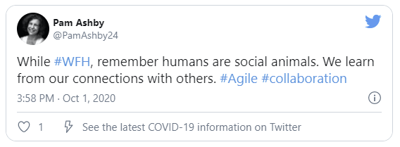
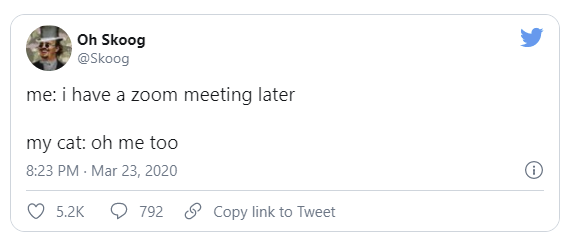

Having work-life merged with your home life can get pretty confusing. At the office, you are surrounded by people who are working in a similar setting as yours.
While at home, it is just the opposite.
Teleworking can get pretty lonely, especially if you are in isolation. Even in the presence of your family members, it is no better as there is no interrelation of your work with them.
In a home setting, everyone works differently, from your teammates to your managers. Therefore, sharing information and getting everyone on the same page is often difficult.
You all might have different work schedules, and it might give rise to some bumps on the road. Under such circumstances, communication is the cue to steering through these bumps.
You need to talk it out with your manager about how the system operates- how often you are supposed to check-in or convey your messages and progress to one another.
This rule applies to every other colleague of yours. Lack of communication can make you feel disconnected.
You ought to figure out how much interaction is required for you to feel connected.
Act accordingly. Do not hesitate to turn to your co-workers for any kind of favor.
The good part is that several tools are created to take care of this problem. There are several chat channels and FaceTime applications which enable you to connect to your teammates, conduct group meetings and stay updated.
It is, however, not mandatory that you have to talk about work all the time. A normal chit chat is fine as long as it breaks the social isolation one suffers while working from home.
Video call is a great way to stay connected and to have some fun at the same time.
If you are an introvert and are not fond of socialising, take part in a few interactive sessions to be familiar with the team. This helps you to avoid any kind of awkwardness that may initiate among the teammates in the future when you start going to office.
You have to be more proactive about nurturing professional relationships.
Few of the video chat applications available today are:
Also, Zoom’s screen-sharing feature can help everyone be on the same page, give feedback, and share ideas.
Once you are well-equipped with one of these apps, you could end up spending half of your day on video conferencing with your team. Make sure you are in a well-lit room as these would enhance the quality of your chat sessions.